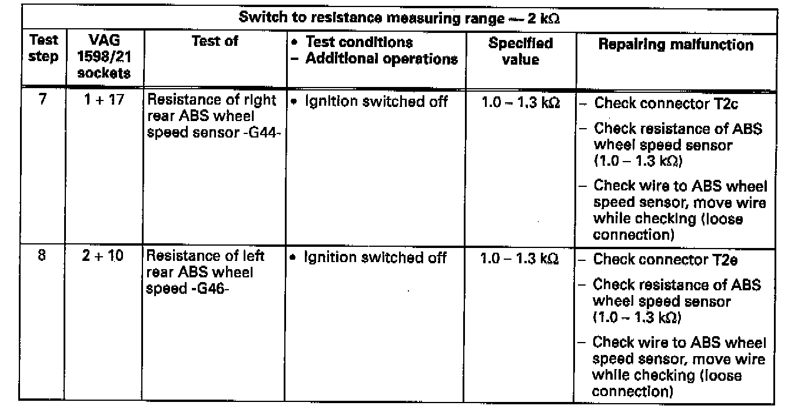

Operation CHARM
: Car repair manuals for everyone.
Home
>>
Volkswagen
>>
1997
>>
GTI (1H1) V6-2.8L (AAA)
>>
Repair and Diagnosis
>>
Brakes and Traction Control
>>
Antilock Brakes / Traction Control Systems
>>
Testing and Inspection
>>
Component Tests and General Diagnostics
>>
Test Steps
>>
Steps 7 - 8
Steps 7 - 8
Electrical Tests Steps 7 And 8:
